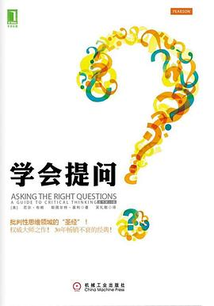

《学会提问》

8.5
★★★★☆
豆瓣评分 · 48,000 人评价
未标记阅读状态
批判性思维领域的经典圣经。书中系统提炼出评估论证逻辑的提问工具箱，教读者识别隐藏的价值观假设、思维谬误与虚假证据，摆脱被动接受信息的“海绵式思维”。
总体观点
信息过载时代最核心的认知竞争力是批判性提问能力。读者不应做被动吸收信息的“海绵”，而应做主动淘金者，带着审视的筛子过滤每一个论断。
任何有说服力的论证都由论题、结论、理由和隐含假设构成。很多看似坚不可摧的观点，其破绽往往不在表面文字，而在于未明说的价值观假设与描述性假设。
识别思维谬误与审查证据效力是理性思考的护城河。学会寻找替代原因与反向例证，才能避免成为他人认知操控与情绪煽动的俘虏。
核心观点
-
1. 海绵式思维是被动接收，淘金式思维是主动审问
记住信息不等于理解，真正的思考发生在不断评估论据与提问挑战的过程中。
面对自媒体爆款推文，海绵式读者全盘相信并转发焦虑，淘金式读者则追问数据样本来源与作者商业动机。 -
2. 区分论题、结论与理由，找不到理由的论断只是断言
没有支撑理由的结论不具有逻辑效力，不可作为决策依据。
领导开会宣称“这个项目必须在下周上线”，若无法给出研发资源与业务价值理由，这只是权威施压而非有效论证。 -
3. 揪出未明说的假设：价值观偏好与事实预设
论证者往往将自己的核心前提隐藏在潜台词中，必须显性化审视。
辩论“是否该为了治安在所有街角安装人脸识别摄像头”，支持者预设了“公共安全优先于个人隐私”的价值观假设。 -
4. 警惕推理谬误：人身攻击、稻草人与滑坡谬误
诡辩者常利用修辞漏洞偷换概念或转移焦点，需要准确识别。
讨论产品方案时，反对者不分析方案本身，反而攻击提议者“刚入职没经验”，犯了人身攻击谬误。 -
5. 审视证据效力：直觉与个人经历不能代替科学验证
幸存者偏差和个案经验最具煽动性但也最容易产生误导。
“我邻居天天吃保健品活到95岁”是个案见证，无法证明该保健品具有普遍延寿功效。 -
6. 寻找替代原因：相关性不等于因果性
事物同时发生并不代表彼此存在因果关系，往往有未被察觉的第三方因素。
夏天冰淇淋销量增加与溺水事件增加同时发生，真正的原因是高温天气，而非吃冰淇淋导致溺水。
树状思维导图
全书思维导图 · 知识脉络树
已复制思维导图大纲到剪贴板！
全书结构
-
第1章 学会提出好问题
对比海绵式思维与淘金式思维，提出批判性思维的三大维度：提出关键问题、积极回答问题与理性行动。
读者在阅读书籍时不再只是勾画重点，而是用便利贴提出“这个结论成立的前提是什么”。 -
第2章 论题和结论是什么
教读者在长篇文章或口头演讲中准确定位作者的核心关切与最终落脚点。
阅读一篇5000字的政论文章，先剥离修辞修饰，精准用一句话提炼出作者到底在主张什么政策。 -
第3章 理由是什么
阐明理由是支撑结论的基石，如何通过提示词定位理由并评估理由的逻辑关联性。
在辩论中寻找“因为”、“鉴于”、“鉴于以下证据”等标志词，列出理由清单进行逐一审查。 -
第4章 哪些词语意思不明确
识别关键词的多义性与歧义，防止论证者通过模糊词汇偷换概念。
广告宣称某种饮料“富含有机天然活性成分”，追问“活性”与“天然”的具体生化指标与标准。 -
第5章 什么是价值观假设和描述性假设
深度解析隐形假设的概念，学会站在论证者的立场发现其未曾言明的前提预设。
主张高税收调节财富分配的学者，其底层隐含着“社会平等优于绝对市场效率”的价值观假设。 -
第6章 推理过程中有没有谬误
梳理滑坡推理、诉诸公众、诉诸权威、两难陷阱等常见逻辑诡辩形式。
“如果今天允许孩子迟到一次，他以后就会高考落榜一生尽毁”，典型将轻微偏差推演至灾难的滑坡谬误。 -
第7-8章 证据的效力如何：从个人经历到科学研究
建立证据层级金字塔，评估问卷调查、专家意见与双盲实验的可靠度。
评估药物疗效时不看个别病友感言，而是查阅经过同行评议的大样本随机对照临床试验报告。 -
第9-10章 有没有替代原因与数据的欺骗性
揭示因果倒置、遗漏变量及统计图表刻意裁剪坐标轴制造视觉误导的陷阱。
某公司财报图表中将Y轴起始值从0截断至95%，将微小增长渲染成暴涨，被批判性读者一眼识破。 -
第11-12章 遗漏的重要信息与能得出哪些合理的结论
寻找被刻意隐瞒的负面数据，避免非黑即白的二极管结论，得出有条件的审慎结论。
新政策宣称创造了10万就业，批判性审视同时追问它是否导致了传统行业8万原有岗位的流失。